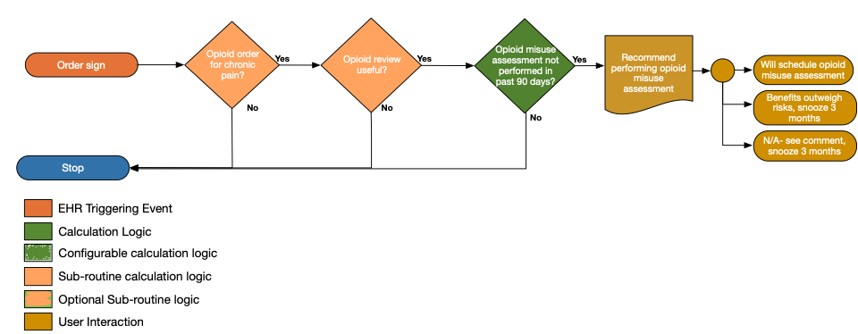
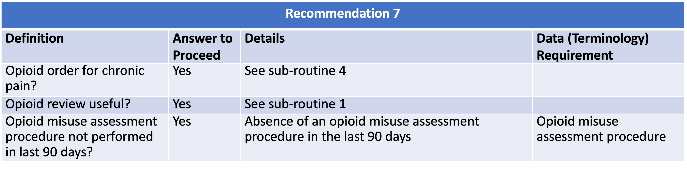

Clinicians should evaluate benefits and harms with patients within 1 to 4 weeks of starting opioid therapy for chronic pain or of dose escalation. Clinicians should evaluate benefits and harms of continued therapy with patients every 3 months or more frequently. If benefits do not outweigh harms of continued opioid therapy, clinicians should optimize other therapies and work with patients to taper opioids to lower dosages or to taper and discontinue opioids (recommendation category: A, evidence type: 4).
The ranges introduced are based on practical considerations for identifying a course of treatment likely to be subject to the recommendation. They were arrived at through discussion with pilot partner clinicians.
{% include recommendation07-functional-description.html %}  The following artifacts formalize the description of the logic and behavior defined by this recommendation.
| Resource | Type | Description |
|---|---|---|
| CDC Opioid Prescribing Guideline Recommendation #7 | PlanDefinition | Event-Condition-Action rule that implements behavior for CDC Opioid Prescribing Guideline Recommendation #7 |
| Recommendation #7 - benefits and harms of starting and/or continuing opioid therapy for chronic pain | Library | Defines the data requirements to support evaluation of recommendation #7 |